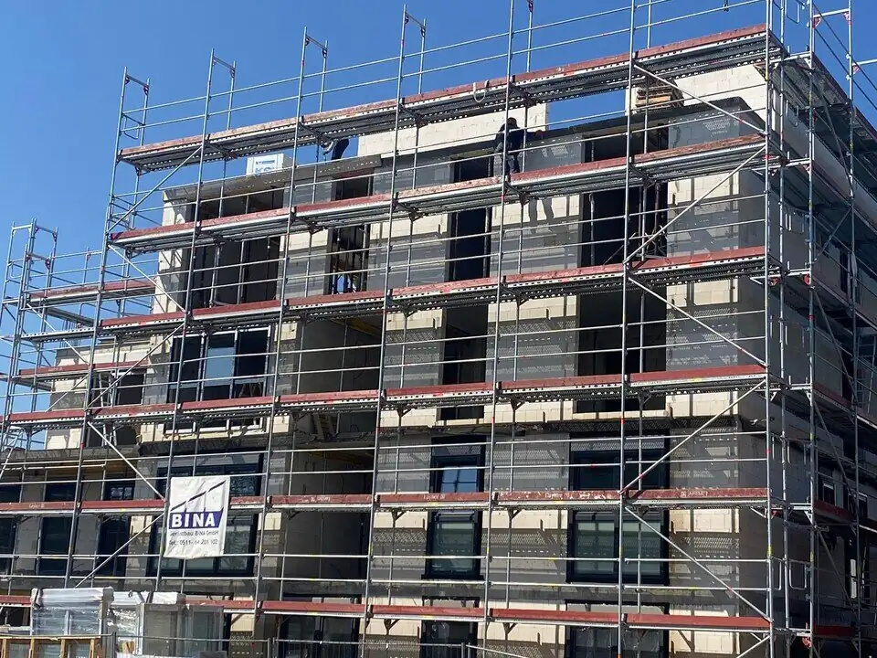

Fachgerechte Montage nach RAL
Das beste Fenster ist nur so gut wie sein Einbau. Wir montieren Ihre Fenster, Türen und Rollläden fachgerecht, dicht und termingerecht – vom Einzelobjekt bis zum Mehrfamilienhaus.
Mehr als der Einbau eines Bauteils
Ein Großteil der Energieverluste an Fenstern entsteht nicht am Produkt selbst, sondern an einer unsachgemäß ausgeführten Anschlussfuge zwischen Fenster und Mauerwerk. Undichte Stellen führen zu Wärmebrücken, Zugluft und im schlimmsten Fall zu Feuchtigkeitsschäden.
Deshalb behandeln wir die Montage als eigenständiges Gewerk mit eigenem Qualitätsanspruch – nicht als Nebensache zum Fensterkauf. Den Einbau übernehmen ausschließlich zertifizierte Fensterbauer, die nach den anerkannten RAL-Montagerichtlinien arbeiten.
Das bedeutet für Sie: eine Montage, die nicht nur "irgendwie dicht" ist, sondern nach einem bundesweit anerkannten, dokumentierten Qualitätsstandard ausgeführt und geprüft wird.
Zertifizierte Fensterbauer nach RAL-Montagerichtlinien
Die RAL-Montagerichtlinien sind der anerkannte Qualitätsstandard für den fachgerechten Einbau von Fenstern und Türen in Deutschland. Wir arbeiten ausschließlich mit ausgewählten Fachbetrieben zusammen, die nach diesem Standard arbeiten – für jedes Projekt, unabhängig von Größe oder Objektart.
Geschulte Fachkräfte
Den Einbau führen zertifizierte Fensterbauer aus, die wir selbst auswählen und über Jahre kennen. Ihre Qualifikation lassen wir uns nachweisen, bevor sie für uns auf eine Baustelle gehen.
Dokumentierte Ausführung
Anschlussfugen nach dem Drei-Ebenen-Prinzip, statisch korrekte Befestigung und geprüfte Materialien – nachvollziehbar dokumentiert, etwa für Ihren Förderantrag.
Anerkannt für die BAFA-Förderung
Für die BEG-Einzelmaßnahmen-Förderung verlangt das BAFA den fachgerechten Einbau durch ein qualifiziertes Fachunternehmen. Unsere RAL-konforme Montage erfüllt diese Voraussetzung.
So läuft Ihre Montage ab
Vom Aufmaß bis zur Übergabe – damit Sie wissen, was wann passiert und was Sie selbst vorbereiten sollten.
Noch vor der Bestellung messen wir jede Öffnung exakt auf und prüfen Laibung, Mauerwerk und Anschlusssituation. Erst danach geht Ihr Auftrag in die Fertigung – so passt später jedes Element auf den Millimeter.
Sobald der Liefertermin feststeht, vereinbaren wir den Montagetag mit Ihnen. Vorher sagen wir Ihnen, was zu tun ist: Fensterbänke freiräumen, Gardinen abnehmen, rund einen Meter Arbeitsfläche schaffen. Möbel und Böden decken wir ab.
Die alten Fenster oder Türen werden fachgerecht ausgebaut. Die Entsorgung übernehmen wir auf Wunsch komplett – Sie bleiben nicht auf Altmaterial sitzen.
Innen luftdicht, in der Mitte wärmegedämmt, außen schlagregendicht und diffusionsoffen – gemäß den RAL-Montagerichtlinien, ausgeführt von zertifizierten Fensterbauern.
Beschläge und Dichtungen werden eingestellt, bis jeder Flügel sauber läuft und überall gleichmäßig anliegt. Dieser Schritt entscheidet darüber, ob ein Fenster über Jahre dicht bleibt.
Wir gehen gemeinsam durch, zeigen Ihnen die Bedienung und hinterlassen eine besenreine Baustelle. Auf Wunsch erhalten Sie die Ausführungsdokumentation für Ihre Unterlagen und den Förderantrag.

Montage-Logistik für ganze Objekte
Bei mehreren Wohneinheiten planen wir die Montage als koordinierten Bauablauf – etagen- oder gebäudeweise, mit möglichst geringer Beeinträchtigung für Mieter und Nutzer.
- PlanungBauabschnittsweise, mit Terminplan je Einheit
- KommunikationAbstimmung mit Hausverwaltung & Mietern
- BaustelleTägliche Reinigung, minimierte Lärm-/Staubbelastung
- AbnahmeEinheitenweise Zwischen- und Endabnahme möglich
Kundendienst: Immer für Sie da
Mit der Endabnahme endet unsere Verantwortung nicht. Setzt sich ein Rollladen fest, klemmt ein Fenstergriff oder muss eine Dichtung nach ein paar Jahren nachjustiert werden, sind wir für Sie erreichbar – ohne Sie an den Hersteller oder eine anonyme Hotline zu verweisen. Als Vertragspartner vor Ort in Isernhagen übernehmen wir Reparaturen, Nachjustierungen und Wartungen selbst und kennen dabei jedes von uns montierte Objekt.
Geprüfte Ausführung
Wir führen jede Montage nach den RAL-Montagerichtlinien aus und dokumentieren sie. Diese Unterlagen bekommen Sie auf Wunsch ausgehändigt.
Reparatur- & Kundendienst
Klemmende Beschläge, poröse Dichtungen oder ein Rollladen, der nicht mehr sauber läuft – wir kommen vorbei und beheben es.
Ein fester Ansprechpartner
Vom Aufmaß bis zum Kundendienst Jahre später – ein fester Ansprechpartner kennt Ihr Projekt.
Produkt und Montage aus einer Hand
Fordern Sie ein Angebot an, das Material und fachgerechten Einbau gemeinsam berücksichtigt.